Built into the real Station, deck/index.html, on branch station/dock-20260923 from production de95670. Every picture below was taken in a real headless Chromium on the MacBook at 1440×900, device scale 2, with every outside host blocked (so the charts say "delayed", which is the offline harness, not the dock). Nothing is deployed.
| Alan, verbatim | What the strip now does | Proof |
|---|---|---|
| "consolidate into ONE row with a dock-style slider. There's no scrolling left to right" | One centred row, 28 px tall, 24 controls, no horizontal scroll. The old header had controls at three heights (0 / 35 / 91 px); every control now shares one top edge (y = 3 px). | §2 |
| "Look how there's a slope. The icons get bigger AND they go higher" | The chip under the pointer is 2.0×, its neighbours fall away on a raised cosine (1.00× · 1.00× · 1.00× · 1.00× · 1.03× · 1.59× · 2.00× · 1.55× · 1.01× · 1.00× · 1.00× · 1.00× across the timeframe section). Tops stay on one line; the bottoms trace the curve — the Mac Dock hung from the top edge. | §3, §4 |
| "It most definitely does not pixelate" | No will-change on the chips, so Chrome repaints each one at its magnified size instead of stretching a rest-size bitmap. The 2× type in the crop is sharp. | §3 crop |
| "it moves sideways too much… I'm trying to click the arrows and it moves. That's unacceptable" | The engine has no horizontal term at all: it returns one scale per chip and the DOM write is scale() only. Measured drift of every chip centre while magnified: 0.00 px. The › arrow: centre 945.61 at rest, 945.61 magnified, clicked while magnified, screen changed ("manual" → "screen 1 / 9"). | §5 |
| "split it in sections and the behaviour applies within the section" | Sections with thin dividers: station · timeframe · charts · scenes · video · panes (phone only) · ⋯. The swell stops at a divider: with 6H at 2×, every chip outside the timeframe section measured exactly 1.00×. | §3 |
| "there's a lot of grayed-out bullshit that I think can be cut" · "Reset preset, I don't even know what it does" · "AUTO was a build-phase thing" · "Screen 9 of 9 isn't clickable, so it can be separate" | Off the strip and behind ⋯: layout (auto/desk/iPad/compact), display ↗, reset preset, fullscreen, and the auto-hide switch. "screen n / n" and the data-age line are a non-clickable readout pinned at the right end, never magnified. Group labels are gone from the strip; the caption under the pointed chip says its group instead. | §6 |
| "The only things that really matter is what chart timeframe we're on… the selector of how many charts we view" | Timeframe and chart count are the first two sections after the wordmark, in the centre of the row. The chart count is now chips (2 · 6 · 8, plus 3 or 1 when a preset fixes it) that drive the same select and handler as before. | §2 |
| "Maybe fully hide when not in use" | Two seconds after the pointer leaves, the strip tucks to a 5 px lip and the wall keeps the height. It returns when the pointer reaches the top edge, the lip is tapped, or a control takes keyboard focus. Remembered per browser; the switch is under ⋯. | §7 |
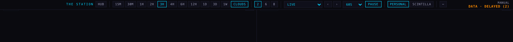
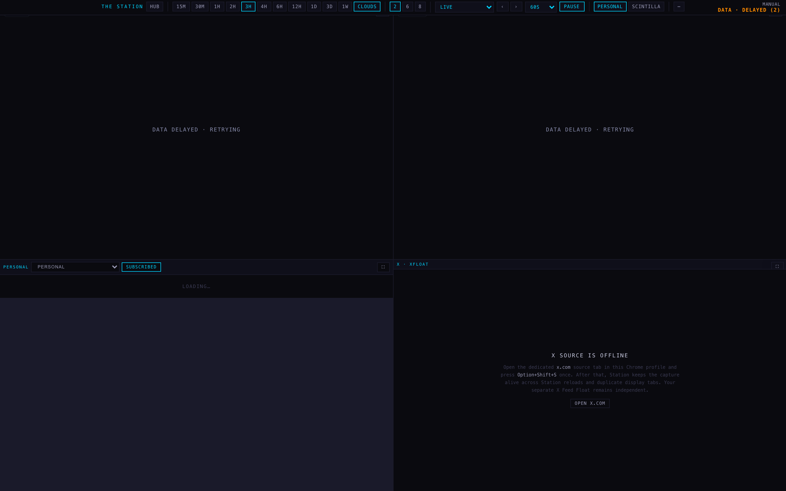
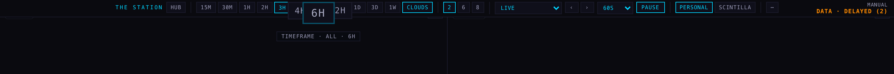
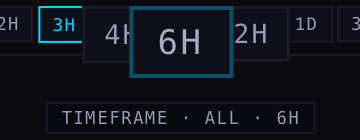
The one trade-off, said plainly. With no sliding and a 2× chip, the pointed chip covers the inner third of each neighbour (4H and 12H above). The Mac Dock avoids that by sliding icons apart, which is exactly what Alan rejected. If the overlap reads as too much, the two knobs are DOCK_MAX_SCALE (2) and DOCK_REACH (2.2 chips) at the top of the engine; nothing else changes.
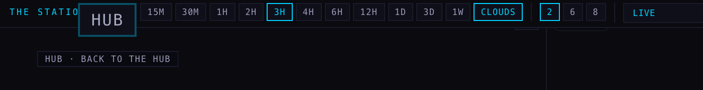
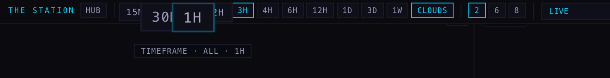
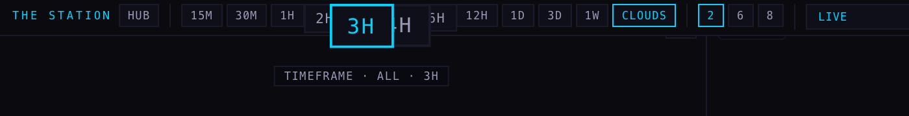
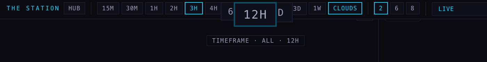
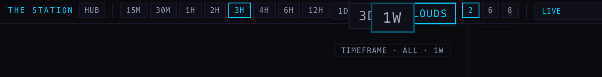
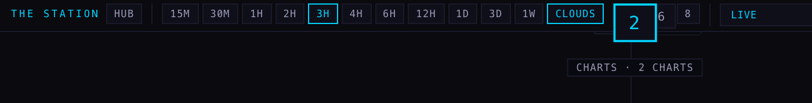
| chip | section | centre drift (px) | top-edge drift (px) | scale with pointer on 6H |
|---|---|---|---|---|
| 15m | timeframe | +0.00 | +0.00 | 1.00× |
| 30m | timeframe | +0.00 | +0.00 | 1.00× |
| 1h | timeframe | +0.00 | +0.00 | 1.00× |
| 2h | timeframe | +0.00 | +0.00 | 1.00× |
| 3h | timeframe | +0.00 | +0.00 | 1.03× |
| 4h | timeframe | +0.00 | +0.00 | 1.59× |
| 6h | timeframe | +0.00 | +0.00 | 2.00× |
| 12h | timeframe | +0.00 | +0.00 | 1.55× |
| 1D | timeframe | +0.00 | +0.00 | 1.01× |
| 3D | timeframe | +0.00 | +0.00 | 1.00× |
| 1W | timeframe | +0.00 | +0.00 | 1.00× |
| cloudsToggle | timeframe | +0.00 | +0.00 | 1.00× |
Drift is the difference between each chip's bounding box at rest and while 6H is magnified. Maximum across all 24 controls: 0.00 px sideways, 0.00 px at the top edge.
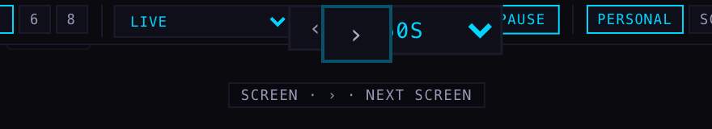
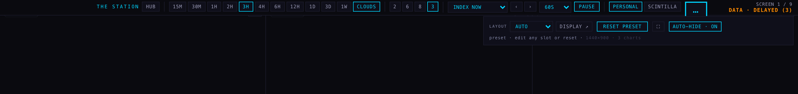
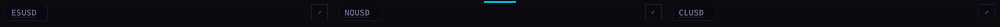
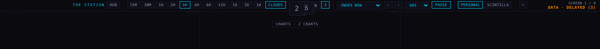
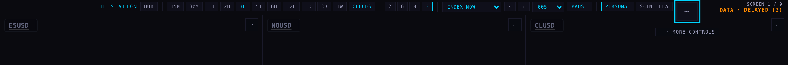
station.dock.autohide = "0" in this browser.dockArc() replaces the old Gaussian-plus-reflow layout. It is pure, counts the swell in chips (so a 108 px scene picker and a two-letter timeframe swell alike), stops at the section, and returns scale only. Ten offline tests pin it: 2× under the pointer, monotone falloff, section isolation, a wide chip fully magnified at its own edge, continuity for every one-pixel move, no horizontal output, no will-change, no white or near-white hex in the dock stylesheet, and the auto-hide contract.:focus-visible) and open selects only; a click anywhere else drops focus the strip still holds. Caught by the harness, which never saw the strip tuck until this was fixed.--ink3, --dim, --crk and one new hover grey #A9ABC2 (lightness 0.71). It never uses --ink or --ink2 (#C6C8DE). The orange "DATA · DELAYED" in the readout is the existing market-status colour, unchanged.chart/index.html and its twin station-shells/chart-v1/index.html (byte-identical, blob f57c7fd5); scene logic, rotation, screens, presets, favourites, the Equalizer and every calculation.de95670.Harness and raw measurements: run folder evidence/capture-dock.cjs, shots/measurements.json here. The harness verifies that the port it opened serves this worktree's bytes before it measures anything, because other lanes run their own static servers on this machine.